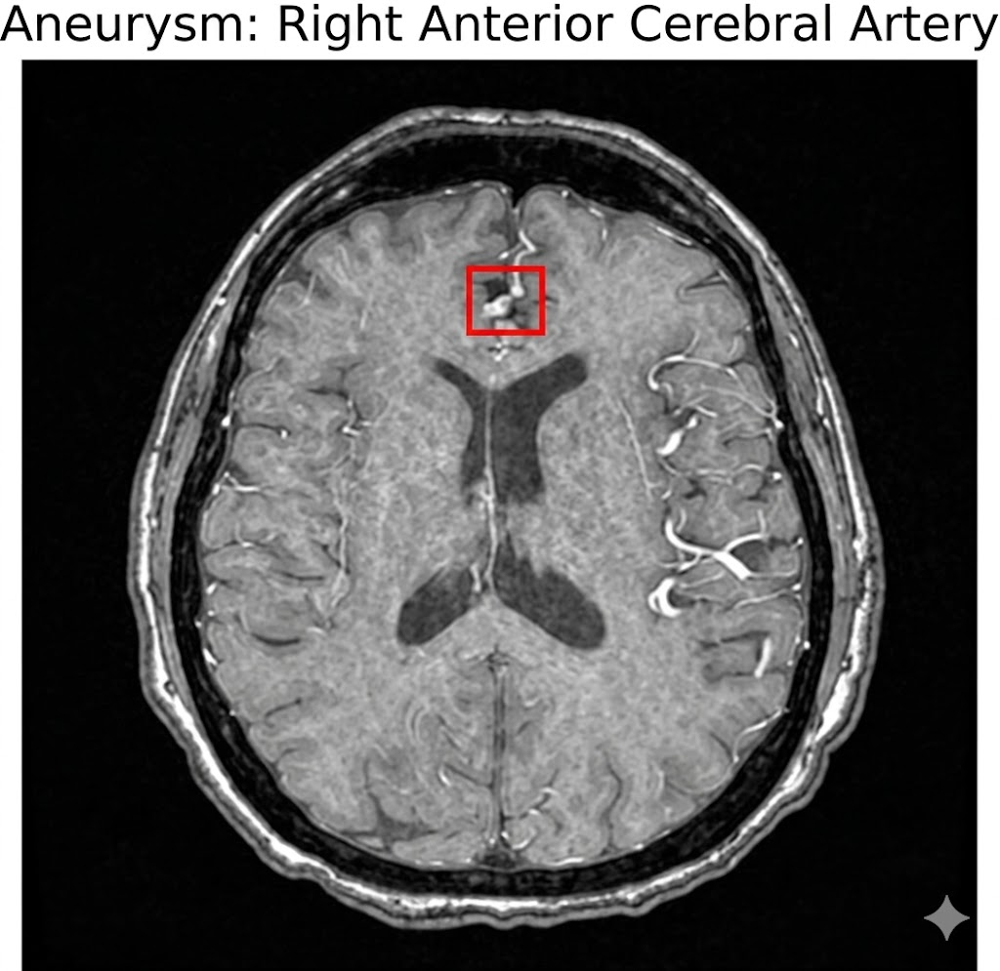
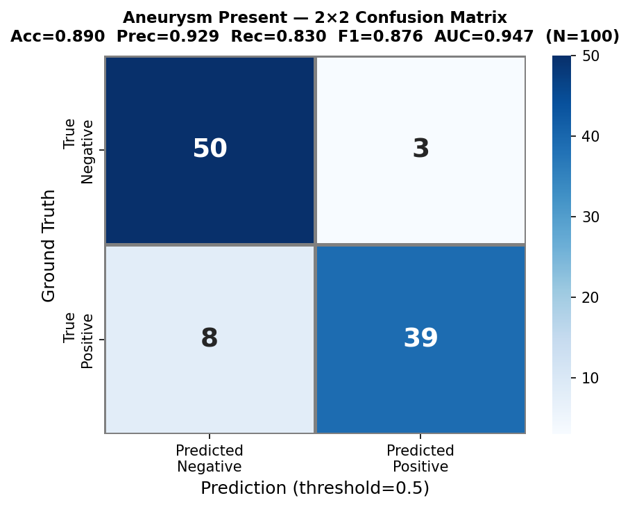
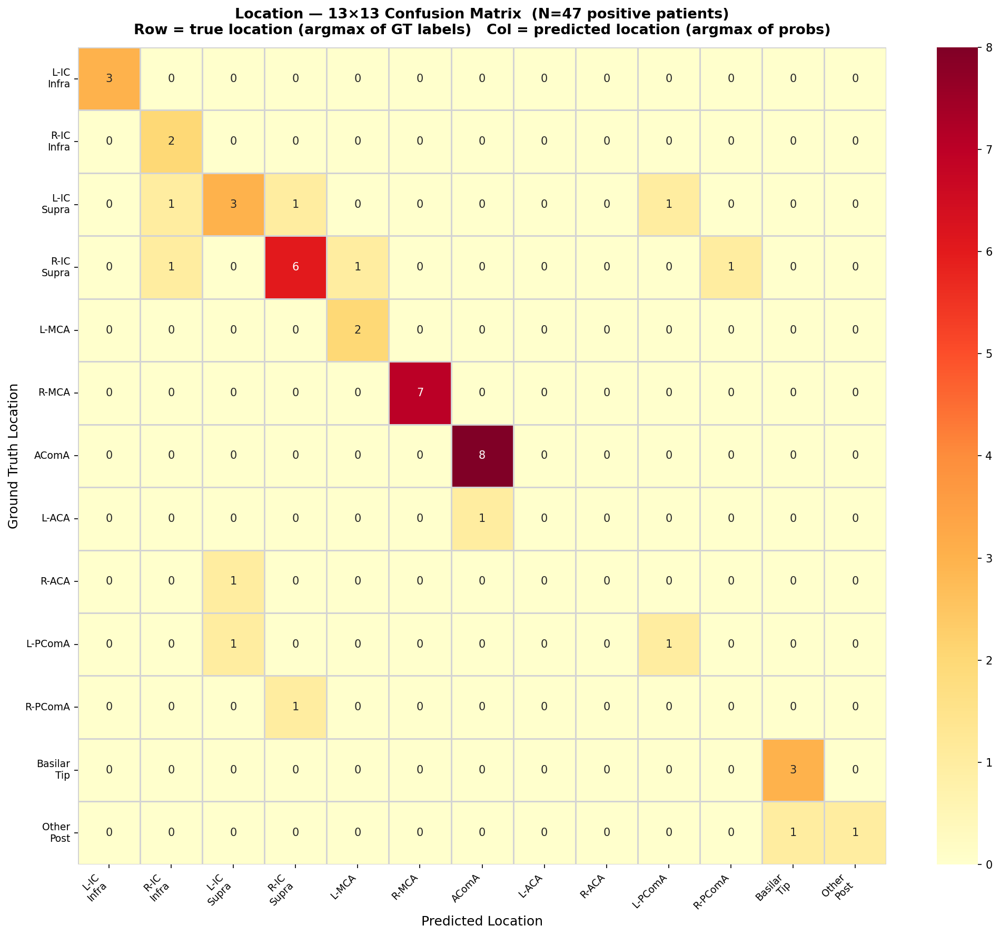

Precision AI for neurovascular screening. Automated detection and anatomical localization of intracranial aneurysms across 13 cerebral vessel territories.
| Location | Probability | Confidence | Risk |
|---|
Research Evaluation Protocol — Validation Cohort (N=100)


| Total Patients | 100 |
| Aneurysm Positive | 47 (47.0%) |
| Modality Distribution | CTA: 42% · MRA: 35% · MRI T2: 15% · MRI T1post: 8% |
| Sex Distribution | Female: 63% · Male: 37% |
| Age Range | 19–89 years (median: 60) |
| Vessel Location Targets | 13 anatomical territories |
| Prediction Outputs | 14 (13 locations + aneurysm present) |
| Evaluation Metric | Weighted multi-label AUC (Kaggle protocol) |
| Preprocessing | DICOM → NIfTI → RAS orientation standardization |
| Inference Hardware | NVIDIA GPU, ≤8 GB VRAM, CUDA 12.x |